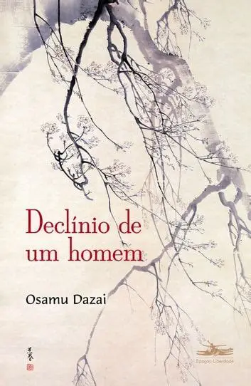
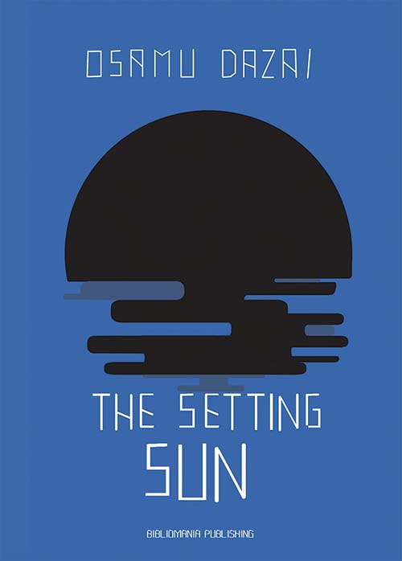

太宰治 (1909-1948)
Osamu Dazai foi um dos escritores mais importantes da literatura japonesa moderna. Suas obras exploram temas como alienação, sofrimento emocional e a busca por significado.
Sua escrita é conhecida pelo estilo confessional e profundamente psicológico, influenciando gerações de leitores e escritores ao redor do mundo.

人間失格 (1948)
Uma obra sobre desespero existencial e alienação social.
Acompanha a vida de Yozo, um homem que sente não pertencer à humanidade.

斜陽 (1947)
Mostra o declínio da aristocracia japonesa após a guerra.
A história acompanha uma família tentando sobreviver às mudanças da sociedade.
女生徒 (1939)
Um retrato íntimo dos pensamentos de uma jovem estudante.
A obra apresenta sentimentos, inseguranças e reflexões do cotidiano.
“Agora eu perdi a capacidade de pensar que as coisas vão ficar bem. Esse é o meu castigo por ter ridicularizado tantas vezes o sofrimento dos outros.”
- No Longer Human
Mesmo após sua morte, Osamu Dazai continua sendo um dos autores japoneses mais lidos e admirados do mundo.
Suas obras influenciaram profundamente a literatura moderna e continuam inspirando adaptações em filmes, séries, mangás e animes como Bungo Stray Dogs.